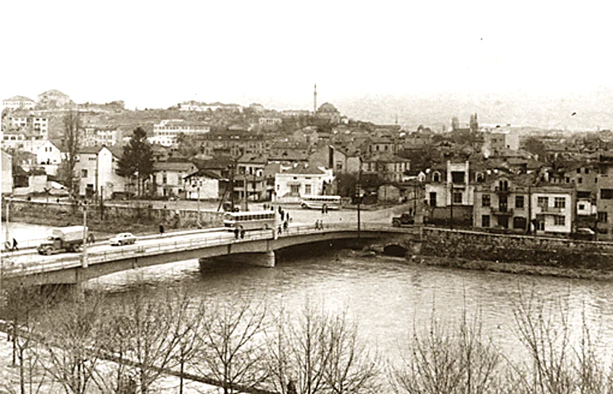
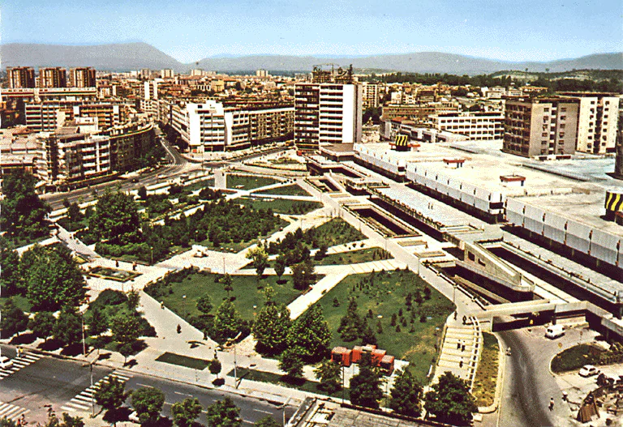

Trg
- Scenarij
- Dimitrie Osmanli, Simon Drakul
- Kamera
- Kiro Bilbilovski
- Leto
- 1964
- Trajanje
- 00:06

Pogled na mesto, z urnim stolpom desno in Gazi Isa-begovo mošejo levo, s četrtjo „Saat kula“. (1940-a leta)

Betonski most pri današnjem hotelu „Grand“. V ozadju se vidi skopska trdnjava - Kale. (1950-a leta)

Panorama Skopja. (1950-a leta)

Panorama Skopja. V ospredju je betonski most (pri današnjem Grand hotelu), v ozadju pa Kamniti most ter stavbi Oficirskega doma in Narodne banke. Desno zgoraj se vidi skopska trdnjava - Kale. Nabrežje je urejeno kot sprehajališče in cesta za vozila, z zelenjem vmes. (1950-a leta)

Pogled na betonski most (pri današnjem Grand hotelu). V ospredju je četrt Pajko. V ozadju je skopska trdnjava - Kale, desno od nje Mustafa-pašina mošeja. (1950-a leta)

Skopje, 1950-a leta, z novimi stanovanjskimi stavbami. V sredini je prostor današnje Zelene tržnice.

Panorama mesta Skopje. V ospredju je Trg svobode. Ulica proti Vardarju je „Vasil Glavinov“. Na prvem vogalu trga se vidi vhod v osnovno šolo „Goce Delčev“. - 1950-a leta

Trg „Sloboda“. V ozadju se vidita Oficirski dom in Narodna banka. - 1950-a leta

Središče Skopja pred potresom - okoli 1960.

Panoramski posnetek osrednjega mestnega območja Skopja iz letala. Trg z Oficirskim domom, Narodno banko in Gospodarsko trgovinsko zbornico. Desno je glavna pošta, levo spodaj pa se vidi streha Narodnega gledališča. Fotografija je iz 1950-ih let.

Panoramska fotografija osrednjega območja Skopja, - 1950-a leta

Posnetek osrednjega mestnega območja iz zraka pred potresom - 1963. Med stolpi (zgoraj desno), kjer je danes trgovski center, se vidi cerkev „Car Konstantin in carica Helena“.

Panorama dela stare skopske čaršije, 1950-a leta.

Pogled na del Bit pazarja in staro čaršijo. Nad njima se vidi Mustafa-pašina mošeja. (1950-a leta)

Pogled na središče Skopja. Kamniti most se še uporablja kot prometna povezava. Fotografija je nastala kmalu po katastrofalnem potresu 26. julija 1963.

Skopje leta 1968. Lokacija današnjega mestnega trgovskega centra.

Panoramska fotografija mestnega središča. Trg se še vedno uporablja kot parkirišče za motorna vozila.
(1960-a leta)

Panorama osrednjega dela mesta z regulacijo Vardarja, posneta s skopske trdnjave - Kale. (1970-a leta). V ospredju so Kamniti most, blagovnica Pelister in druge stavbe.

Pogled s skopske trdnjave - Kale proti središču Skopja. Sprehajališče na desnem bregu Vardarja je polno ljudi. (1970-a leta)

Pogled s skopske trdnjave - Kale proti središču Skopja. (1970-a leta)

Pogled na levi breg Vardarja, tik ob Kamnitem mostu. V spodnjem delu fotografije se vidi del cerkve Sv. Dimitrija. (1970-a leta)

Pogled na levi breg Vardarja, tik ob Kamnitem mostu. V spodnjem delu fotografije se vidi del cerkve Sv. Dimitrija. (1980-a leta)

Panorama Skopja. V ospredju je mali park „Ženska borka“. Spodaj levo se vidi del stavbe Mestne bolnišnice in del stavbe Skupščine. - 1980-a leta.

Park „Ženska borka“ z Mestnim trgovskim centrom, stanovanjskimi in javnimi stavbami mesta Skopje. - 1980-a leta.

Pogled na bulevar in most „Goce Delčev“ z nadvozom v ospredju. V ozadju sta Telekomunikacijski center in del stanovanjskega kompleksa „Gradski zid“. (1980-a leta)

Pogled na osrednje mestno območje. V ospredju so del bank, most „Revolucija“ in gledališče. V ozadju se vidijo Betonski most, Kamniti most in Telekomunikacijski center - 1980-a leta.

Pogled na osrednje mestno območje s strehe današnjega Zavoda za finance. V daljavi se vidi kamniti most. Desno na razglednici se vidi današnje gledališče, nad njim pa se kaže skopska trdnjava - Kale - 1980-a leta.

Skopje konec 1970-ih let. Most pri današnjem hotelu „Grand“. Na levi se dviga stavba Makedonske radiotelevizije, na desni pa stavba današnjega Zavoda za plačilni promet.

Panorama Skopja s pobočja gore Vodno. V ospredju je hotel „Panorama“. (1980-a leta)

Panorama Skopja ponoči, s pobočij gore Vodno. (1980-a leta)

 Akvadukt4 razglednice
Akvadukt4 razglednice Kale30 razglednic
Kale30 razglednic Mostovi60 razglednic
Mostovi60 razglednic Nabrežje58 razglednic
Nabrežje58 razglednic Trg46 razglednic
Trg46 razglednic Stavbe66 razglednic
Stavbe66 razglednic Krščanski templji19 razglednic
Krščanski templji19 razglednic Muslimanske stavbe33 razglednic
Muslimanske stavbe33 razglednic Oficirski dom29 razglednic
Oficirski dom29 razglednic Gledališče28 razglednic
Gledališče28 razglednic Železniška postaja13 razglednic
Železniška postaja13 razglednic Šole36 razglednic
Šole36 razglednic Parki12 razglednic
Parki12 razglednic Tržnice18 razglednic
Tržnice18 razglednic Ulice38 razglednic
Ulice38 razglednic Panorama I60 razglednic
Panorama I60 razglednic Panorama II30 razglednic
Panorama II30 razglednic Kolaži55 razglednic
Kolaži55 razglednic Poplave9 razglednic
Poplave9 razglednic Potres27 razglednic
Potres27 razglednic Skopje 200026 razglednic
Skopje 200026 razglednic